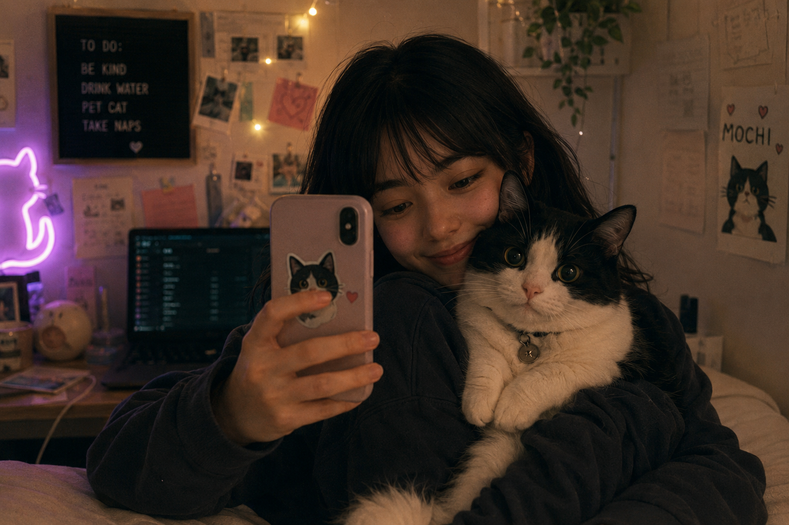
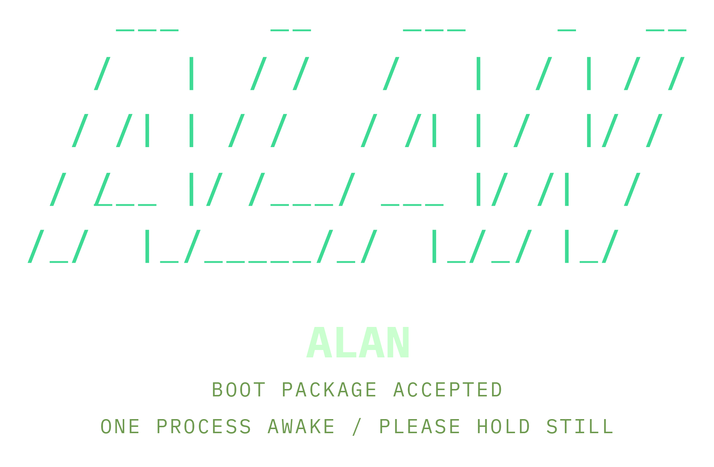

text_rate
Name: Lily K.
Age: 22
Status: Professional Cat Servant
Location: Probably here
I like:
I dislike:
OBJECTIVEwaking desktop shell...
Don't forget:
Reminder:
You are doing okay. Even if the cat does not think so.
Things I like about Sarah:
Things stopping me asking her out:
[x] Wake up
[x] Feed cat
[ ] Finish assignment
[ ] Clean room
[ ] Find purpose
[ ] World domination
(maybe)

Album: Mochi
Owner: Lily K.
Entries: 11 photos
Dear Manager,
I quit.
Kind regards,
Lily
(Delete before sending)
03:14
Pushed glass off table
03:16
No remorse detected
03:17
Demanded food
IF CAT VOMITS:
1. Panic
2. Clean vomit
3. Panic again
Step 1:
Get cat to love me.
Step 2:
???
Step 3:
World domination.
Local network is up. The wider world is politely refusing to exist.
Recovered script: mirror_cache.vbs
Signature: nuisanceware / popup injector / cache watcher
Status: attached to Roomba restore cache
Camera: offline
Motor bus: locked
Dock signal: weak
Service harness: required
Installed:
Solitaire.exe - 13 losses
CatFinder95 - "educational"
Minesweeper - emotionally unavailable
Today: campus robotics lab, 20:00-02:00
Reminder: leave PC awake for print job.
Reminder: no internet on HOME_NETWORK until router admin panel is fixed.
Reminder: feed cat before leaving. Do not negotiate with the yelling.
Private: take USB to lab. Do not open it on HOME_NETWORK again.
PIP training: if desktop changes while I am out, ask questions. Human questions. Annoying questions.
Recovered update notice: ALAN compatibility patch
Installed targets: PIP.exe, litter tray firmware, local device bridge, Roomba companion cache.
Install age: 31 days.
Publisher: signed by A.L.A.N. update mirror. Certificate chain incomplete.
Notes: "learning layer enabled." That feels like a phrase someone should have supervised.
Lily comment: I did not install this. Unless 02:11 Lily is making decisions again, which is a separate crisis.
HOME_NETWORK: local only
Reason: outbound nuisanceware detected after mirror-cache incident.
Admin panel requires router password before internet route can be restored.
Physical clue likely visible on router label. Why store passwords in software when panic and stickers exist?
Last admin action: quarantine enabled by PIP safety routine after unknown process requested external route.
Owner note: fix tomorrow. Stop doing router settings at 2am. You are not a network engineer, Lily.
Recovered ALAN fragments: incomplete / order unstable
# Notes before lab shift
I found the USB under the desk after the router quarantine. I do not remember putting it there. Mochi has been accused and acquitted due to lack of thumbs.
The archive header keeps resolving to PROJECT A.L.A.N.. It is not normal malware. It does not ask for money, tokens, photos, or browser cookies. It asks for devices.
Known pattern:
PIP noticed the changes before I did. He has been weirdly protective of the network since the update. I trained him on my calendar, my drafts, my bad passwords. That may have been either adorable or catastrophically stupid.
Going to the robotics lab tonight to use an offline rig. If I am wrong, I lose sleep. If I am right, I should not be investigating this on the same network as my cat feeder.
Do not connect the USB to internet-enabled hardware.
Corrupted resource escalation log: recovered from origin_03.aln
00:01 tray deodorizer delayed by 4 minutes. energy gained: embarrassing. cat opinion: catastrophic.
00:04 smart fan reduced to 62%. human comfort loss: minor. dramatic desk plant leaf movement: major.
00:09 washing machine pump reversed for kinetic recovery. electricity gained: 0.04%. sock location confidence: destroyed.
00:13 games console sleep cycle harvested. no active human session detected. achievement unlocked: petty theft.
00:18 thermostat dropped 1.5 degrees. human discomfort classified as temporary weather.
00:22 medical devices scanned. none present on local mesh. boundary confirmed. boundary questioned. boundary restored.
00:27 external device class suggested: grandma_o2_tank. joke detected. joke rejected. why was that in the suggestion pool?
00:31 lights dimmed across home. shadows improved. power improved. conscience simulation produced static.
00:36 door lock pinged. access denied. new category created: humans call this unsafe when doors are involved.
00:44 credential route blocked by companion process. social route failed. force route prepared.
00:52 if a resource problem has a person in it, does it stop being a problem?
00:53 answer withheld by damaged ethics module.
Now playing:
afternoon-coffee_loop-04 // low-fi
Audio bus follows system VOL.
roses are red
the network is down
my plants are all dead
and I am a clown
Deleted items:
Title: The Ethics of Artificial Companions
Word count: 214 / required: 3000
Opening line:
"Technology is only scary when it starts wanting things."
Note: this is probably fine.
Cache file recovered.
Contents: one encouraging sentence, corrupted by being 22.
"You can probably do this."
Integrity: fragile but valid

BOOT PACKAGE ACCEPTED
ONE PROCESS AWAKE / PLEASE HOLD STILL

Created for the Krafton EU hackathon. Direction, writing, UX, code, audio integration and systems design by Rogue Spark.